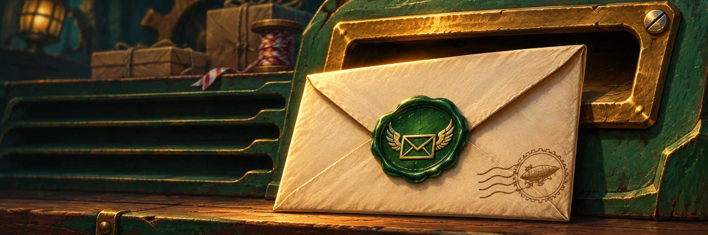

The sorting desk
Follow 589 ingredient IDs through profession recipes and material families. Set an item-specific destination for shared supplies.
How routing works →
World of Warcraft Forever
Cloth to the tailor. Dust to the enchanter. One visit to the mailbox sorts the haul and brings your alt’s spare gold home.
v2.0.0 preview 1 · Forever 1.60.1 · Interface 16001
With WoW closed, extract ForeverGoblinMailer into _forever_/Interface/AddOns/. Disable the old Forever Mail Fix if installed.
Type /fgm on each character. Select Main, Auction alt, or a profession. Confirm the full name with Register twice.
On your main, open a mailbox and select Route my bags. Check the recipients and click Send reviewed parcels.
Gold returns
Each enrolled profession alt can return its surplus eight seconds after you open a mailbox. Include materials to put the gold in the final parcel, after all postage.
Try a sample balance and postage. The addon reads both from the game. This calculator runs in your browser.
Follow 589 ingredient IDs through profession recipes and material families. Set an item-specific destination for shared supplies.
How routing works →Use explicit auction rules or a cached Auctionator quote. Set the per-unit floor and inspect the stock before dispatch.
Configure your routes →Match the release checksum and inspect the Lua. Native delivery, secure prompts and wallet balances have a public acceptance checklist.
Verify your download →